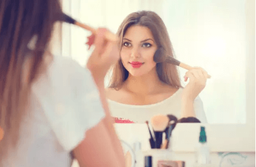
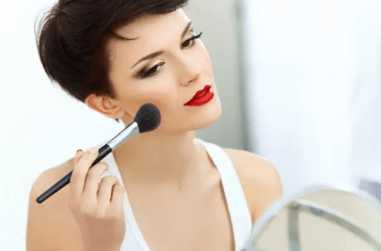
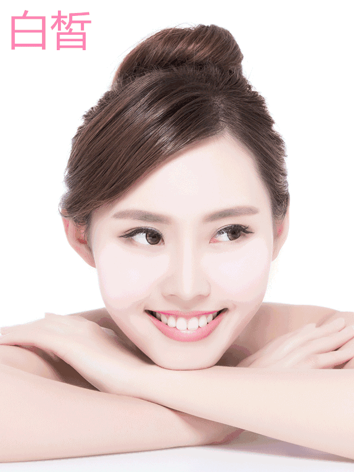
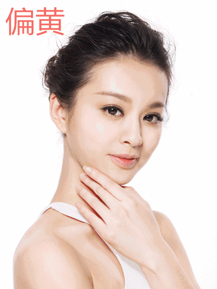

人人都想面若桃花，不负春光。可怎么做才有好气色呢？
最简单快速的方法，莫过于挑一款好用美貌的腮红，画出好气色。那么问题来了，腮红千千万，到底哪一款才是最适合你的呢？
不合适的腮红就像不合适的粉底，时时刻刻泄露你气色不好的小秘密。
 深肤色配深色，浅肤色配浅色；冷肤色配粉色系，暖肤色配橙色系的规则，在这里也通行。同色系的腮红和口红，会让整体妆容更和谐。除此之外，面对不同的肌肤，你还有这些点雷区要规避。
白皙的肌肤总是更有优势，各种用色大胆鲜亮的妆容都能轻松HOLD住。
可如果手法欠佳，太过厚重浓烈的颜色容易在白皙美人的脸上显脏。
 所以白美人们，娇俏鲜嫩的粉色系，非常适合你们哦。搭配大胆的彩色妆容，也能得心应手。玫琳凯®纯色腮红系列——冰凝红莓
橙色系腮红可能不太适合肌肤偏黄的美人们。
 你们的首选是自然为主，贴合肤色的颜色。色盘上显得有些暗的颜色，能帮你打造更自然的红润气色哦。玫琳凯®纯色腮红系列——含羞红颜
面对糟糕的环境和快节奏的生活状态，肌肤难免黯淡。
此时的腮红应以质感为主。太鲜艳的腮红会有微妙的漂浮感和违和感，降低你的气质。 可以选择饱和度不高，第一眼看上去不太鲜艳明亮的腮红。细小珠光能营造低调光泽，提升你的气质。玫琳凯®纯色腮红系列——迷醉彩霞
挑选腮红可是门技术活！有了这份入门级“教材”，再也不用担心我面对那么多的腮红色号时头疼啦！